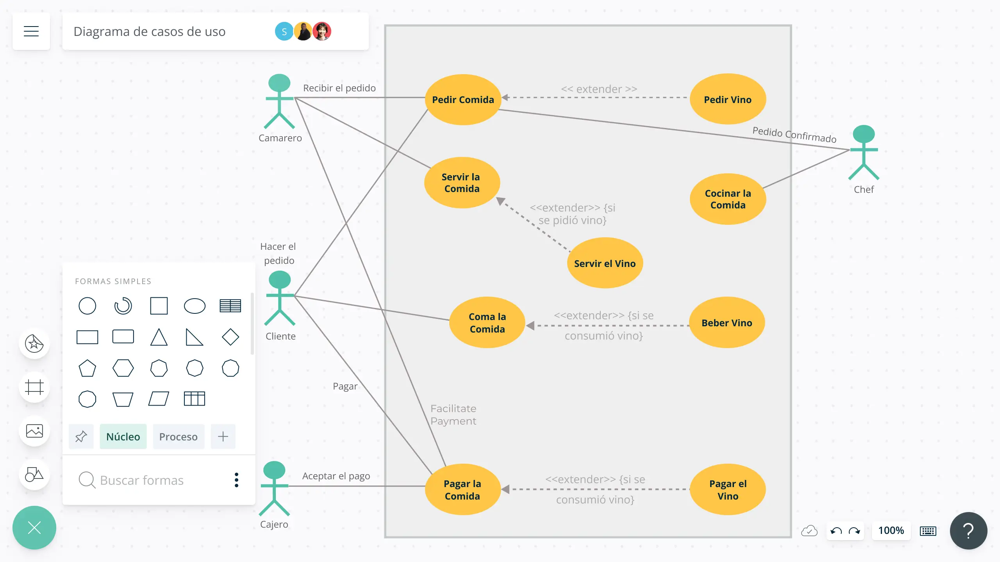

Los diagramas de casos de uso en UML son una herramienta de modelado utilizada para representar las interacciones entre un sistema y sus actores externos en términos de los objetivos o funcionalidades que el sistema debe proporcionar. Estos diagramas se centran en el comportamiento del sistema desde el punto de vista del usuario final.
El diagrama de casos de uso, dependiendo de la profundidad que tengamos, puede ser utilizado para muchos fines, entre ellos podemos encontrar los siguientes:
Representar los requisitos funcionales.
Representar los actores que se comunican con el sistema. Normalmente los actores del sistema son los usuarios y otros sistemas externos que se relacionan con el sistema. En el caso de los usuarios hay que entender el actor como un “perfil”, pudiendo existir varios usuarios que actúan como el mismo actor.
Representar las relaciones entre requisitos funcionales y actores.
Guiar el desarrollo del sistema. Crear un punto de partida sobre el que empezar a desarrollar el sistema.
Comunicarse de forma precisa entre cliente y desarrollador. Simplifica la forma en que todos los participes del desarrollo, incluyendo el cliente, perciben como el sistema funcionará y ofrecerá una visión general común del mismo.